A reference architecture for governing AI agents, MCP servers, tools and skills, wherever they are built. It shows who owns each asset, who uses it, what it costs and what it may touch, and it lets every change ship without surprising the people who depend on it.
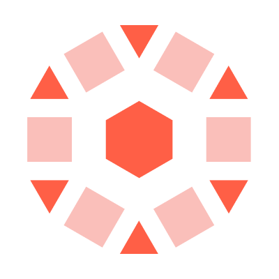
Unity Catalog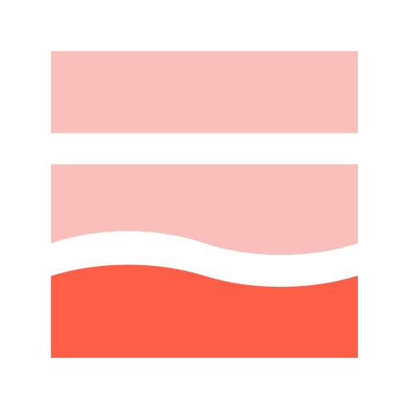
Lakebase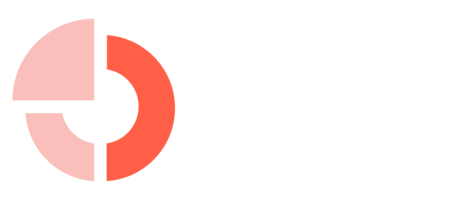
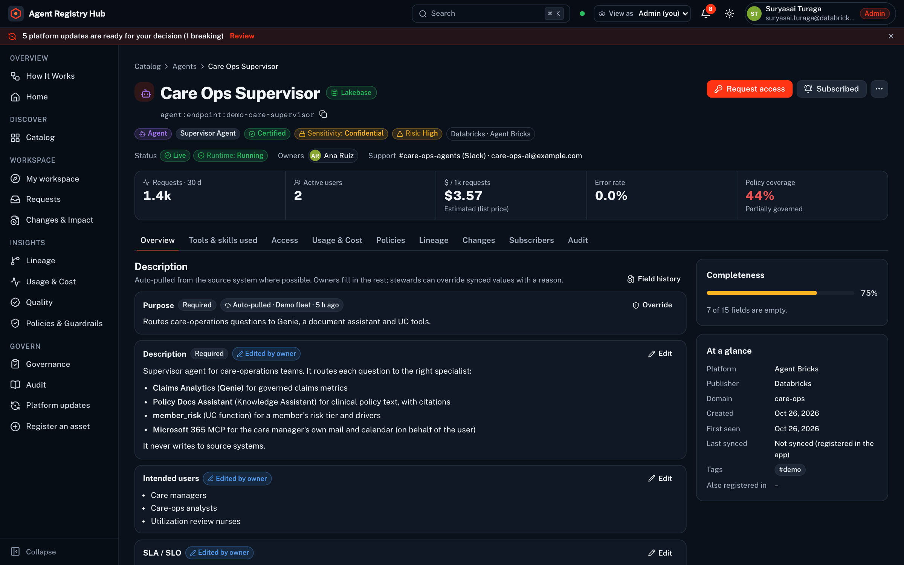
Inventory figures as of 28 October 2026; the registry re-syncs hourly. Branch regression run of 26 October 2026.
A Databricks App backed by Lakebase. It indexes what Unity Catalog, Unity Gateway and Agent Bricks already know, and adds what they don't: ownership, access workflows, email-registered consumers, change impact and a tamper-evident audit trail.
Not another agent framework, and not a replacement for Unity Catalog: platform permissions stay the source of truth. It is a solution accelerator that runs in your workspace, not a generally available Databricks product.
Enterprises are moving from a handful of AI pilots to hundreds of agents that call thousands of tools through the Model Context Protocol (MCP). The agents live on many platforms: Databricks Agent Bricks and Genie, model-serving endpoints, productivity-suite copilots, cloud agent services, SaaS applications and in-house frameworks. Each platform governs its own slice. No one can answer the questions that matter at the portfolio level: what do we run, who owns it, who depends on it, what does it cost, and what happens when it changes?
This paper describes a reference architecture that answers those questions on the Databricks Data Intelligence Platform. The approach indexes what the platform already governs (Unity Catalog securables, Unity Gateway traffic, Agent Bricks agents, MLflow traces, billing and audit system tables) into a Lakebase-backed registry. It then adds the controls no single platform provides: accountable ownership, field-level provenance, time-bound access approvals, email-registered consumers, lineage-based change impact and a hash-chained audit trail. It also writes back: lineage to Unity Catalog, cross-registry IDs from Microsoft Agent 365, and the tool selection of MCP services. A built-in Platform Watch keeps the registry current with the platform, testing each update on a copy-on-write Lakebase branch before an administrator accepts it.
The architecture is implemented as Agent Registry Hub, a deploy-ready Databricks App, and was verified against a live Databricks field workspace.
Agents differ from earlier software in three ways that strain traditional governance. They are built quickly by many teams on many platforms. They act through tools (increasingly MCP servers) that reach into mail, files, CRM, ITSM and data. And they change often: a new prompt, model or tool can change behaviour overnight.
| Risk | What goes wrong | Control the registry provides |
|---|---|---|
| Shadow agents | Agents and MCP servers no one owns or knows about | Automatic discovery of Databricks-native assets, a front door for external ones, an ownerless queue, and steward curation |
| Standing access | Grants issued by ticket, never reviewed, never expiring | Request → owner approval → Unity Catalog / endpoint grant with expiry, day-3 reminders, day-7 request expiry, automatic revocation |
| Invisible cost | Spend scattered across endpoints, apps and vendors | Unit economics per asset ($/1k requests, $/user) from Unity Gateway usage and billing system tables; budgets and anomaly flags |
| Unguarded tools | Write-capable tools without guardrails or rate limits | Policy chips per asset, required controls per risk tier, coverage gaps and violations over 7 days |
| Surprise changes | A change breaks downstream agents and users | Declared and observed lineage, an impact preview before publish, frozen impact lists, acknowledgements, before/after metrics |
The architecture follows six principles. Each is a deliberate trade-off that keeps the registry trustworthy without becoming a second, competing control plane.
Unity Catalog, workspace ACLs and Unity Gateway remain the source of truth for who may use what and for what actually ran. The registry reads them, records its own decisions, and applies grants through the platform, never around it.
Every asset gets a stable URN (for example agent:endpoint:…, mcp:connection:…, skill:uc:…), and every consumer is identified by email. That is what lets an agent built elsewhere be compared, governed and impact-assessed like a Databricks agent.
Metadata pulled from source systems is shown as auto-pulled. Owners document what the platform can't know. Stewards override synced fields only with a reason and a lock mode, and drift is flagged when the source changes underneath.
Access is requested with a justification and a duration, approved by the people accountable, and provisioned with an expiry. The registry's own service principal can insert into the audit trail but never edit it.
Publishing a change freezes the list of people and assets it affects, notifies them, and tracks acknowledgements (not impacted, will migrate by a date, or need help). Breaking changes require notice and release notes.
Platform features and new versions of the registry are adopted deliberately. Each one is regression-tested on a copy-on-write Lakebase branch of production data, then accepted, delayed or rejected by an administrator. Only non-breaking updates may auto-apply.
Read-only collectors run as a serverless job and land everything in Lakebase. The app reads Lakebase, so pages load in milliseconds and never wait on a warehouse. Every governed write commits together with its audit record.
| Layer | Databricks capability | Role in the architecture |
|---|---|---|
| System of record | Unity Catalog · workspace ACLs | Authoritative permissions; the registry applies grants through UC and endpoint/Genie ACL APIs |
| Traffic & policy | Unity Gateway | Per-request usage, rate limits and guardrails for models and MCP; read from system tables |
| Registry store | Lakebase | Low-latency reads, transactional governance writes, branches for safe update testing |
| Runtime | Databricks Apps · serverless jobs | SSO-protected app; hourly collectors and Platform Watch as serverless jobs, deployed as one bundle |
Faceted search with owners, lifecycle, certification, sensitivity, risk tier, usage sparkline and policy shield. Each asset has an entity page with up to 11 tabs; only the tabs that apply are shown.
Owners document purpose, inputs, outputs, SLA, support and limits. External MCP metadata is auto-pulled, and stewards override specific fields with a reason. Every field shows where it came from.
Justification, duration and terms are captured. Approvers are resolved automatically and held to an SLA. Approval provisions the UC privilege or endpoint/Genie ACL with an expiry. A denial needs a reason.
Requests, tokens, users, errors and latency come from system.ai_gateway.usage and serving usage; cost comes from billing × list prices. Unit economics, budgets and anomalies, all marked as estimates.
Owners see MLflow traces (latency, tokens, state, assessments) and evaluation scorers with trends. Consumers see only their own traces.
Unity Gateway guardrails, rate limits, payload logging and UC permission gates appear as chips. Coverage is scored against the controls required per risk tier, with gaps and violations listed.
Declared and observed lineage connects people to agents, MCP servers, tools and tables. Publishing a change freezes an impact list, notifies everyone on it, and tracks acknowledgements.
Release-note and MLflow feeds are scored and new APIs probed. Updates are regression-tested on a Lakebase branch, then an admin accepts, delays or rejects them. Non-breaking updates may auto-apply.
Where an agent is built is a team's choice; how it is governed is not. Every path below leads to the same record, with an owner, access workflow, cost view, lineage and impact list.
| Onboarding path | How it works | Status |
|---|---|---|
| Register the agent | Owners register any agent, MCP server or skill in the UI or by API (POST /api/assets). It enters as pending approval; once a steward approves, it joins the catalog with owners, description, access workflow and subscribers. | Available |
| Bring its MCP servers through Unity Catalog | Register a vendor or in-house MCP server as a UC HTTP connection or a Unity Gateway MCP service. The registry discovers it, lists its tools, governs access with UC privileges, and calls are audited. | Available |
| Route model calls through Unity Gateway | External agents that call models through Unity Gateway appear in usage, cost and guardrail views like any Databricks workload. | Available |
| Report usage with an email | One call (POST /api/v1/usage with consumer_email) records who used what, through which agent. That feeds lineage and the impact list. | Available |
| Package skills as SKILL.md | Paste or upload a SKILL.md (the open Agent Skills format). The registry validates the frontmatter and registers the skill for approval; UC skills are indexed automatically. | AvailableUC skills Beta |
| Publish approved MCP servers | An MCP Registry-compatible endpoint (/v0.1/servers) lets IDEs and copilots that accept an enterprise registry URL see only approved servers. | Available |
| Link Microsoft Agent 365 | Agent 365 records (Microsoft Graph or an admin-center export) are matched to registry assets and shown as "Also registered in"; uncertain matches wait for a steward. | Available |
| Import standard descriptors | Onboard from an A2A Agent Card or an MCP Registry server.json, and index UC agent services. | Next |
The server.json schema and the /v0.1/servers read API, so the registry can serve as a subregistry for developer tools.
SKILL.md frontmatter (name, description, allowed-tools) for portable skills.
The Agent2Agent descriptor for externally hosted agents (import on the roadmap).
MLflow 3 traces and assessments; OpenTelemetry GenAI conventions for agent and tool spans.
Governance only helps if it shows up where people already work. Three integrations push what the registry knows into Unity Catalog, Microsoft 365 and the MCP gateway. Each one previews its effect first and leaves an audit record.
Agents, MCP servers, tools and skills become Unity Catalog external metadata, linked to the tables they use. An admin reviews the full plan before publishing; the registry only changes objects it created.
AvailableExt. lineage GAMicrosoft Agent 365 can list Databricks Genie agents next to Microsoft 365 copilots. The registry imports those records (Microsoft Graph or an admin-center export) and shows the Microsoft ID as "Also registered in".
AvailableOwners choose which of an MCP service's tools agents can call, with a live preview. Hiding a tool is a breaking change: it needs a reason and notifies everyone on the impact report.
AvailableMCP services GA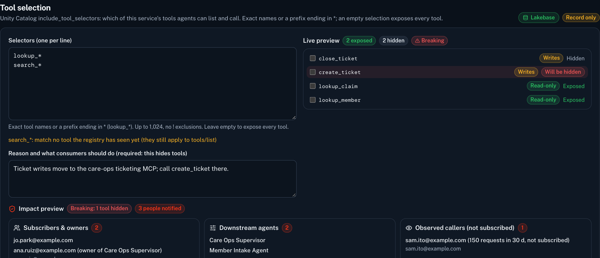
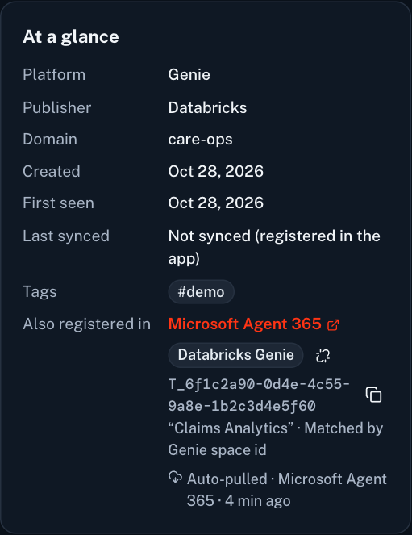
An asset moves through one lifecycle, and each role has a clear part in it. Databricks-native assets enter approved because the platform already governs them; external and custom assets enter discovered and wait for a steward.
| Capability | Viewer | Consumer | Owner | Steward | Admin | Auditor |
|---|---|---|---|---|---|---|
| Browse the catalog and lineage | ✓ | ✓ | ✓ | ✓ | ✓ | ✓ |
| Request access · subscribe with email | ✓ | ✓ | ✓ | ✓ | ✓ | ✓ |
| See usage, cost and traces | – | own | owned | ✓ | ✓ | read |
| Edit descriptions | – | – | owned | ✓ | ✓ | – |
| Approve access · revoke grants | – | – | owned | ✓ | ✓ | – |
| Publish changes · pause · deprecate | – | – | owned | ✓ | ✓ | – |
| Override synced fields · certify · curate | – | – | – | ✓ | ✓ | – |
| Accept or delay platform updates · manage roles | – | – | – | read | ✓ | read |
| Verify and export the audit trail | – | – | – | ✓ | ✓ | ✓ |
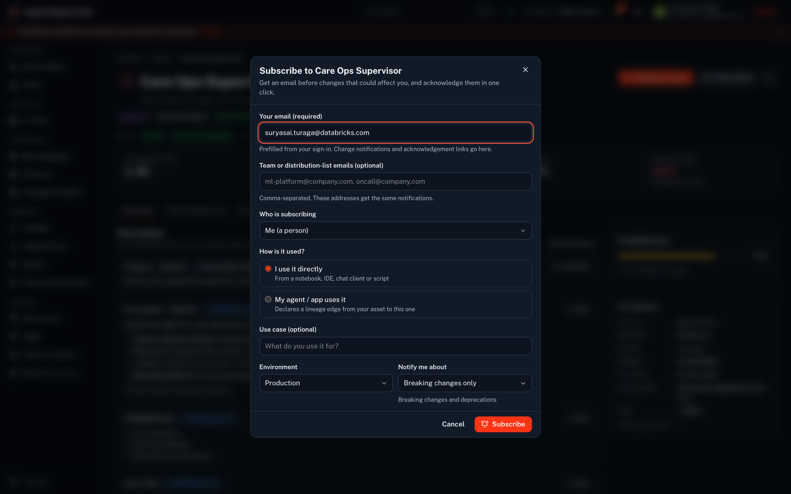
Everyone who subscribes to an agent or MCP server, requests access, or reports usage from code gives an email address (an individual or a team list), plus optionally the downstream agent or process that depends on it. That one field turns usage into lineage, and lineage into a named impact list when the asset changes.
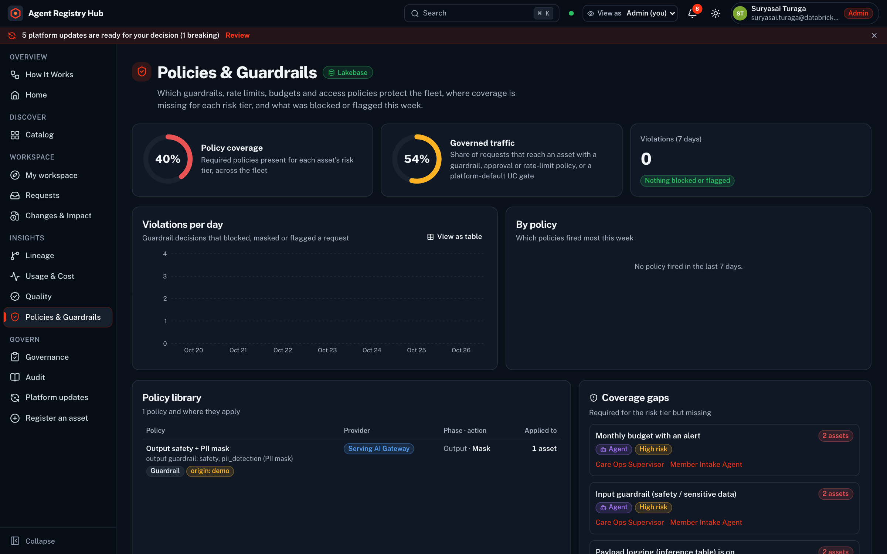
The Databricks and MLflow platforms ship new capabilities every week. Platform Watch turns that stream into a governed upgrade path, so the registry adopts what is relevant deliberately and safely.
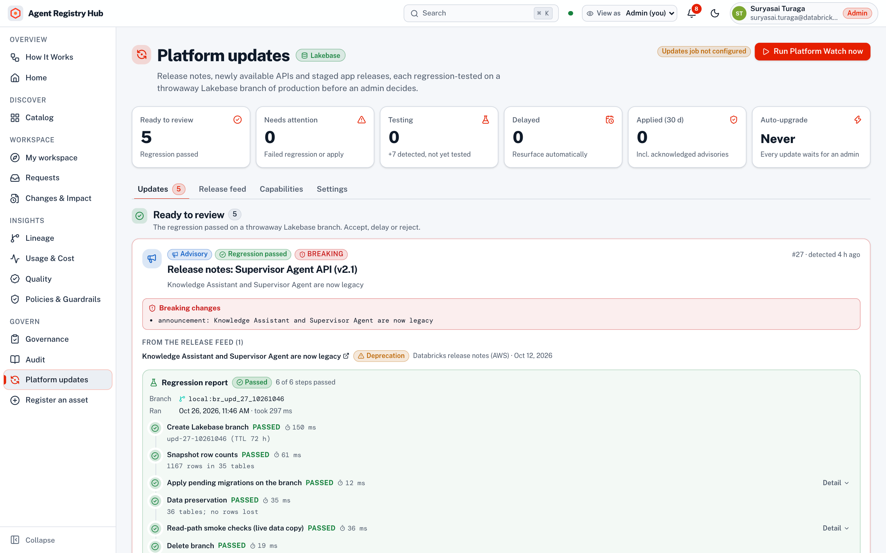
| Candidate type | Raised when | On acceptance |
|---|---|---|
| App release | A newer version of the registry is staged, with its migrations analysed for breaking DDL/DML | Migrate production, deploy the staged app |
| Capability | A probed API becomes available and an adapter ships disabled | Enable the adapter |
| Advisory | Release notes mention a capability the registry depends on (GA, preview, deprecation) | Acknowledge; plan follow-up |
Illustrative screens with a fictional demo fleet
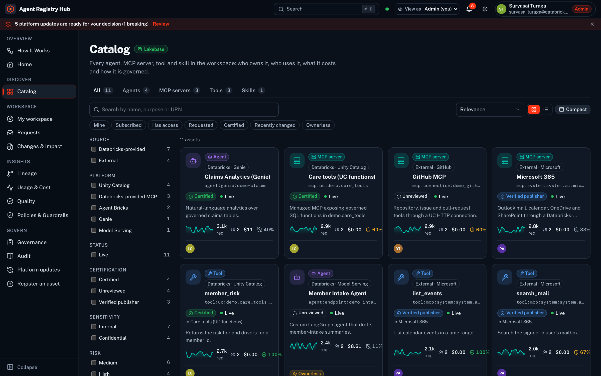
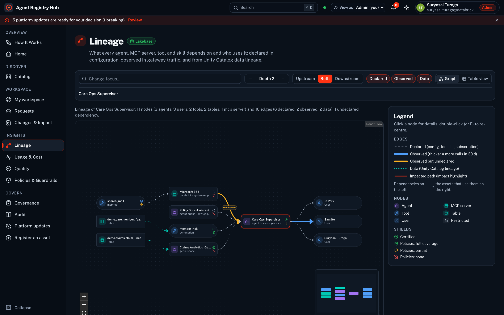
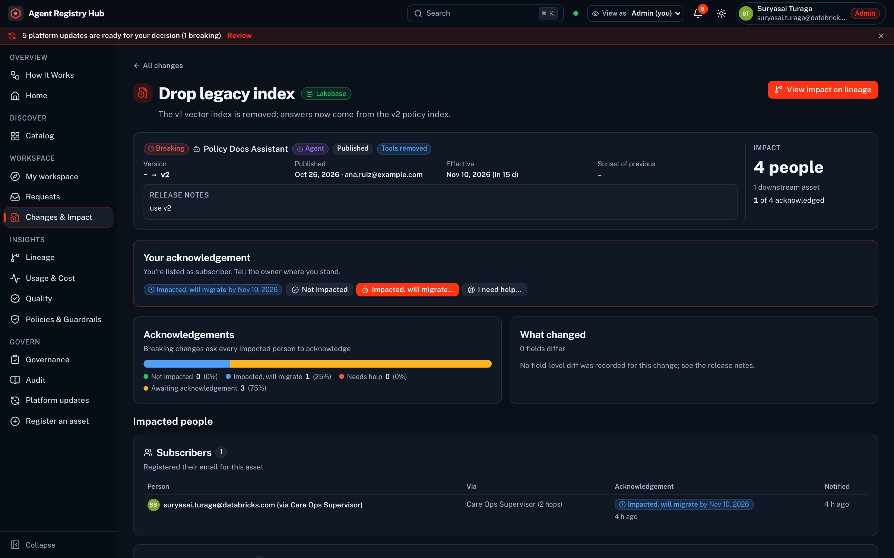
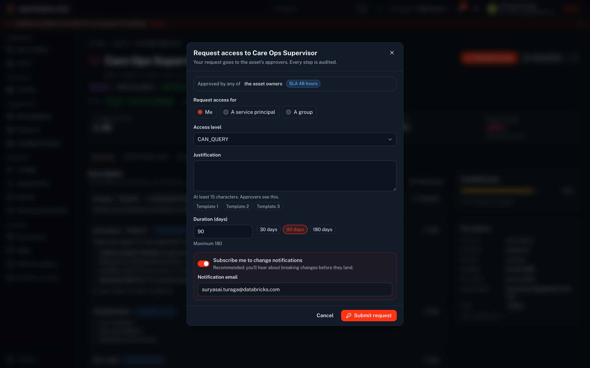
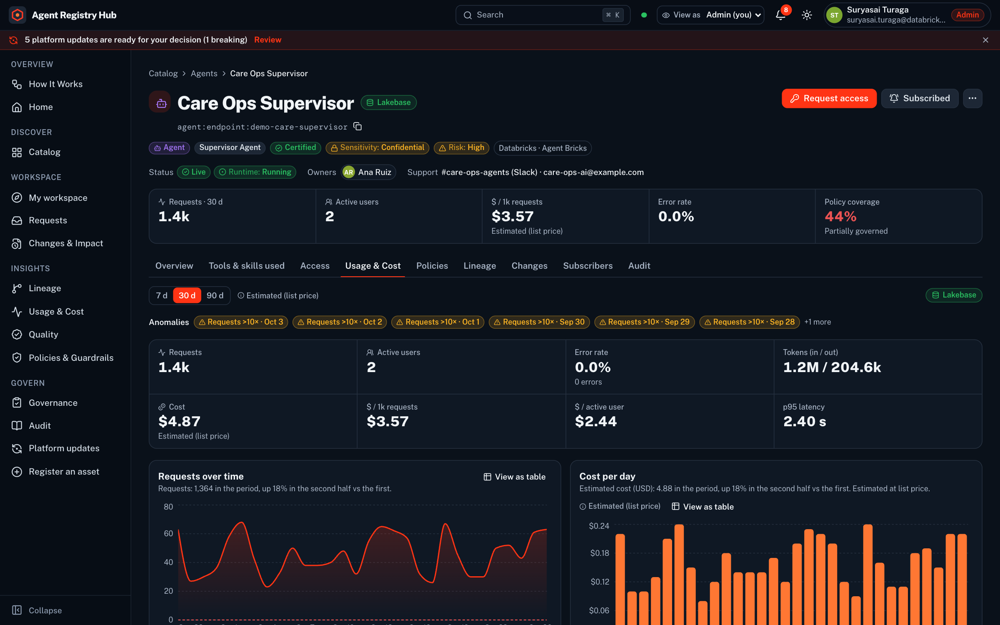
| Outcome | What changes | Measure it with |
|---|---|---|
| Lower risk | No unowned or unknown agents. Access is time-bound and reviewed. Guardrail gaps are visible before an incident | % assets with an owner · % grants with expiry · guardrail coverage by risk tier |
| Cost transparency | Every agent and MCP server has unit economics and an accountable owner | $/1k requests and $/active user per asset · budget variance · anomalies resolved |
| Faster reuse | Teams find an existing agent or MCP server and request access in minutes | Median request-to-grant time · assets reused by more than one team |
| Safe change | Owners see their dependents before shipping; consumers hear in time | % changes with an impact report · acknowledgement rate · incidents caused by agent changes |
| Audit readiness | A tamper-evident trail of who approved what, and why | Chain-verification status · time to produce access evidence |
| Keeping pace | New platform capabilities are adopted deliberately, tested on a branch | Time from release note to accepted update · regressions caught before production |
Status labels follow docs.databricks.com as of October 2026. Beta features may change; the registry labels them in the UI.
The fastest way to see the value is to run the read-only sync in one workspace. Within an hour, you have an inventory of every agent, MCP server, tool and skill, with owners, usage, cost, coverage gaps and the lineage between them.
Suryasai Turaga works at Databricks, helping enterprises put data and AI into production on the Databricks Data Intelligence Platform, and designed and built Agent Registry Hub.
The app, its Lakebase project and three serverless jobs (setup, hourly sync, Platform Watch), deployed with one script.
Collectors never write to the systems they index; grants and write-backs happen only when an approver or admin says so.
Backend and frontend suites; the backend suite also runs on every Lakebase branch regression.
Deploys to any workspace with a CLI profile and a SQL warehouse; no external services required.
Agent Registry Hub is a solution accelerator, not a generally available Databricks product. Capability statuses reflect public Databricks documentation as of October 2026 and may change. Figures come from a Databricks field demonstration workspace; screens show a fictional demo fleet. Databricks, Unity Catalog, Lakebase, Agent Bricks, Genie and MLflow are trademarks of Databricks, Inc. or the Linux Foundation.